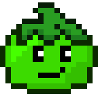

POMODORO
Work
00:00
What are you working on?
planned
completed
How do you want to work?
Work Time (min):
Short Break (min):
Long Break (min):
Cycles per Long Break:
update
reset
What is the Pomodoro technique?
about
tips